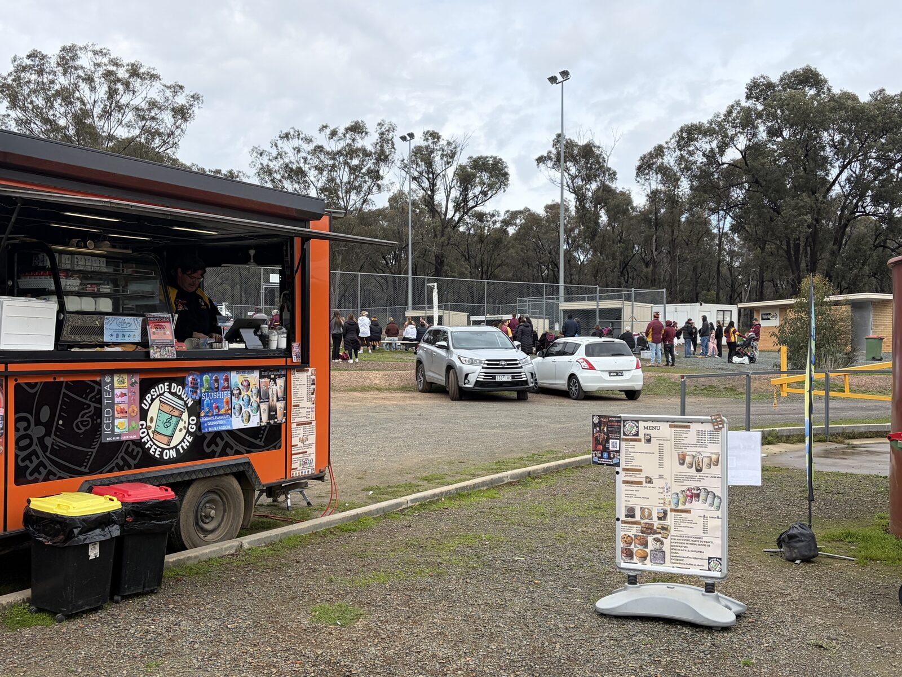

Goulburn Valley League finals 2026
Upside Down Coffee on the Go
Orange van. Self-sufficient. Already on GV footy grounds.

Game day — no power or water needed from the club
Book the van for GVL finals at Tatura, Seymour, Kyabram, Echuca or Mansfield.
Week 129–30 Aug
Semis5–6 Sep
PrelimSun 13 Sep
Grand finalSun 20 Sep
What clubs get
- We bring our own power and water. Set up on the netball courts, far wing or car park.
- Open from 8am for netball and U18s.
- Espresso, hot chocolate, iced drinks, milkshakes, slushies and snacks.
- Already served Mooroopna, Kialla Park (SJDFL), Stanhope and Rushworth.
Even-year host grounds
Tatura · Seymour · Kyabram · Echuca · Mansfield
Board allocates the weekends after Round 18 (this Saturday). We hold the date once the host club says yes.